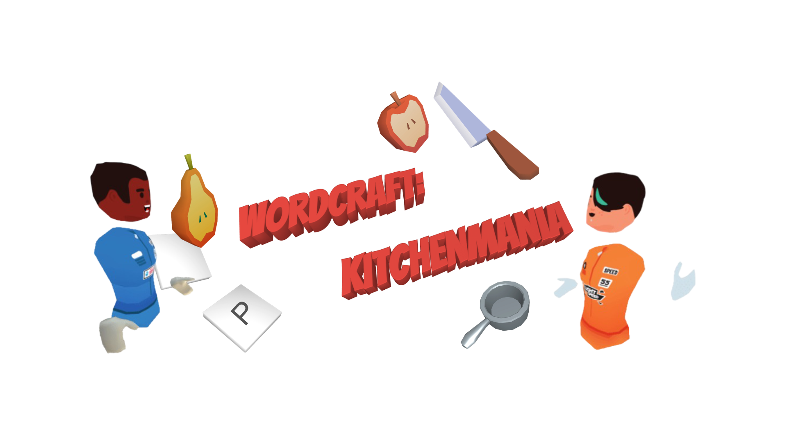
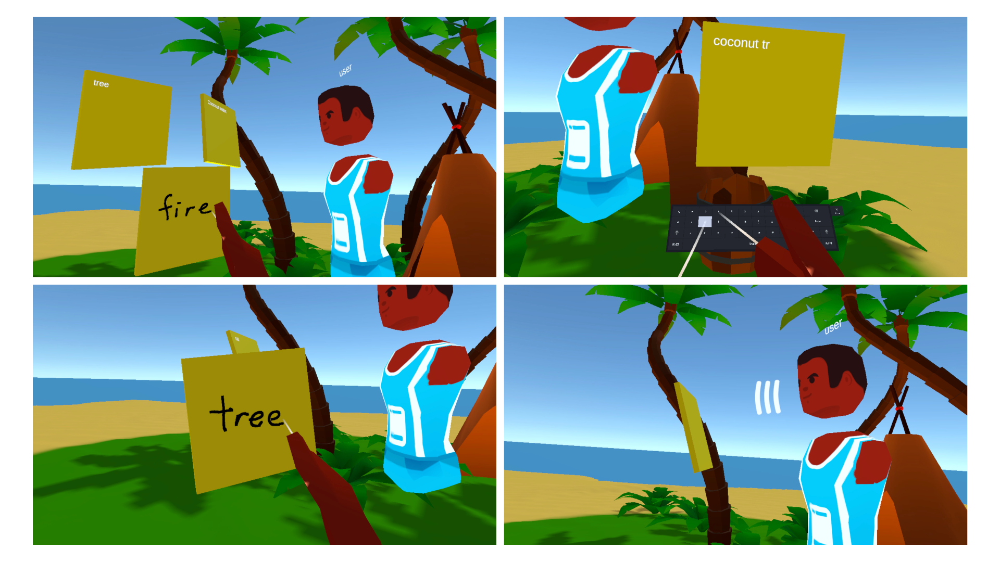
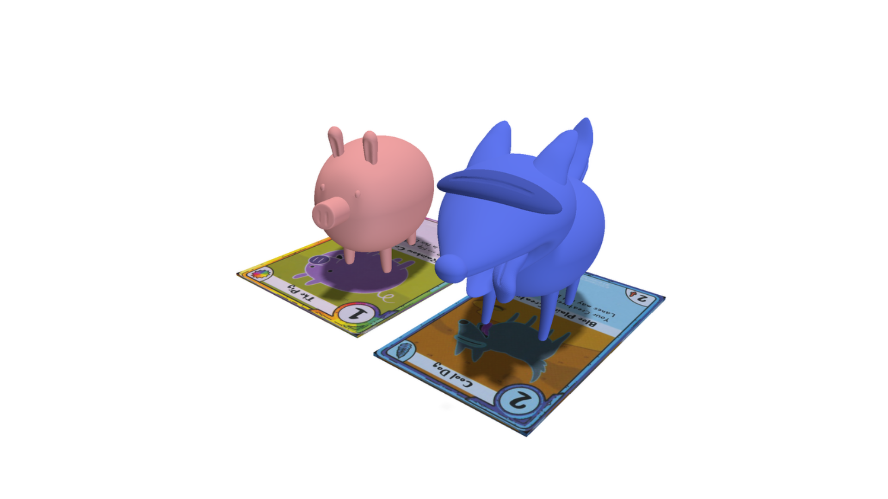
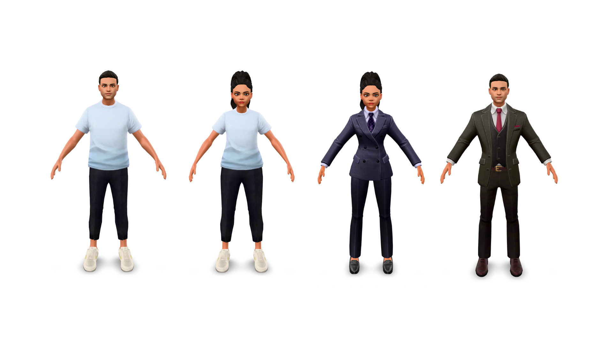
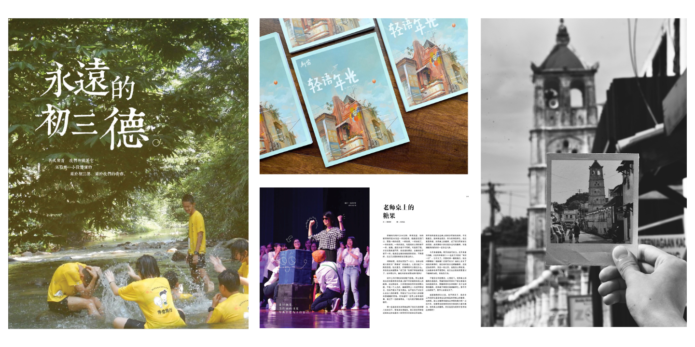

WordCraft: KitchenMania is a multiplayer VR tabletop game built using Unity and Ubiq. Inspired by WordBound, players work together to tear and break objects to obtain letter tiles to form new words. Players then work together to collaboratively form new words longer than other teams to gain more points. The game is mainly tested on Meta Quest but it is compatible with PC and other VR headsets (Github Page).
Watch the demo video here and read more about it here.

As part of my dissertation, I researched into how collaboration and competition in virtual environments influence users' text input behaviour and preference under the guidance of Professor Anthony Steed. To support this study, a synchronous VR sticky note application that supports mid-air typing, handwriting and speech-to-text is built. Ubiq is used for networking, Azure Vision API for handwriting recognition and Azure Speech Services for audio transcription.
Read the full paper here.

I created an augmented reality card game support for Adventure Time Card Wars, bringing the holographic battles from the cartoon into real life. In the show, Finn and Jake play cards that summon characters to fight, which makes it a perfect fit for AR. The app is developed in Unity using ARFoundation and supports both Android and iOS. It is able to recognise unique cards, place characters on detected plane surfaces, respond to user actions like rotating cards, and play simple animations to make battles more engaging (Github Page). As a prototype, it shows how the card game can be made more interactive and imaginative through AR .
Read more about it here.

Researched into whether avatar clothing influences user shopping behaviour in immersive virtual environments. To explore this, we developed a virtual reality retail store using Unity, created avatars with different clothing styles using Ready Player Me, integrated movements and inverse kinematics using FinalIK, and conducted an experiment using Meta Quest 2 and Quest 3. We collected data on gaze dwelling time, expenditure, and embodiment through interaction logs and questionnaires.
Read the full paper here.

Wrote, photographed, edited and published school magazines using Adobe InDesign, Illustrator and Photoshop. Won 'Excellence Award' in the National Chinese School Magazine Competition 2021.
View more pictures here.